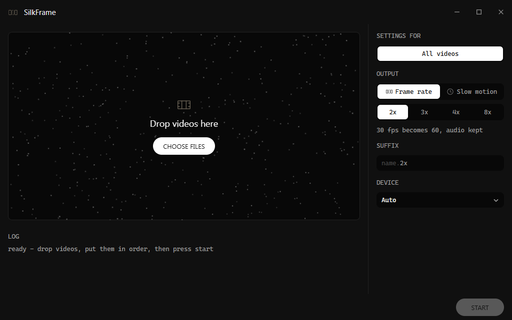

What it does
New frames between the real ones.
all seven come from one pair — look before you trust it
Two modes
Keep the running time, or stretch it.
Frame rate
Same length, twice the frames. Audio copied, not touched.
Slow motion
Same rate, twice as long. Sound stretched, dropped in pitch, or muted.
Before / after
Slow a clip down and the gaps show.
Frames repeated
30 fps
Frames invented
120 fps
one second of 30 fps footage, played at ¼ speed — 30 real frames, 90 written
The queue
Drop a folder in. Set each file its own way.
Drop videos or folders here
click one to change it — drag to reorder
- Drop more in, and reorder the ones still waiting, while a job runs.
- One file fails, it is logged, and the rest of the line carries on.
- Stop returns that file to the head of the line. Start picks the order back up.
Quality
Checked against the frame that was really there.
The middle frame of a triplet is hidden, rebuilt from its two neighbours, then compared with the original. Mean PSNR over 25 triplets per clip, 720p.
repeat previous frame
cross-fade both frames
RIFE 4.25
Sintel
26.50
Big Buck Bunny
37.14
Jellyfish
37.50
PSNR dB
2025303540
| Method | Sintel | Big Buck Bunny | Jellyfish |
|---|---|---|---|
| repeat previous frame | 20.58 | 32.43 | 26.92 |
| cross-fade both frames | 22.97 | 36.76 | 31.30 |
| RIFE 4.25 | 26.50 | 37.14 | 37.50 |
Features
The awkward parts, already handled.
Exact rates
Not only whole multiples: 60, 59.94, or 60000/1001 on the nose.
Try ten seconds
Render a slice to check the settings before the whole clip.
GPU or CPU
Takes the card with the most free memory. Falls back on its own.
Audio kept
Copied byte for byte, not re-encoded — unless you stretch it.
Cuts respected
A shot change repeats rather than morphing one scene into the next.
Flat memory
A two-hour file costs what a ten-second one does. Frames stream.
Anything ffmpeg reads
mp4, mkv, mov, webm, ts. Rotated phone video arrives upright.
Weights fetch themselves
23 MB on the first run, cached after. Nothing to place by hand.
The window
Drop, order, start.

Install
One file, one question.
Run the setup
SilkFrame-Setup.exe, 11 MB, from the latest release.
Answer one question
NVIDIA card, yes or no. That is the whole of the setup.
It fetches the rest
Python, PyTorch, ffmpeg, weights. 3 GB with CUDA, 600 MB without.
$ pip install -r requirements.txt $ python gui.py # the window $ python silkframe.py clip.mp4 # 30 -> 60 fps, audio kept $ python silkframe.py clip.mp4 --factor 4 # 30 -> 120 fps $ python silkframe.py clip.mp4 --target-fps 60 # 23.976 -> exactly 60 $ python silkframe.py clip.mp4 --mode slowmo # half speed, twice as long